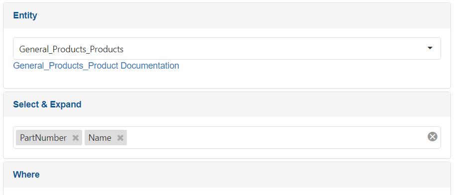

Query Builder
Description
ERP.net has an integrated visual Query Builder.

The Query Builder allows building queries, specific to the ERP Instance. When you use the Query Builder, it allows you to select the user-defined data and calculated attributes in that instance.
The Query Builder allows the developers to create the query visually and then just re-use the query text, replacing the parameters.
Try it
To access the Query Builder for DEMODB, go to:
Tip
User: Admin
Password: 123
While the query is built, the Query Builder changes its URL. For example, to preview the same query for the first 10 products in the Query Builder, head to:
https://demodb.my.erp.net/api/domain/querybuilder#General_Products_Products?$top=10
When you press Execute in the Query Builder, you can preview the result both as table and as JSON.
Note
Pay attention to the link under the selected entity, which opens the documentation for the entity.